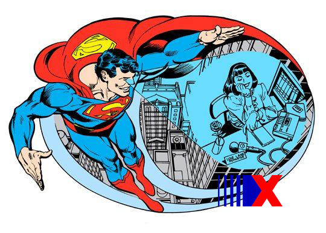

SuperForça
A superforça do Superman permite que ele levante, carregue e arremesse objetos extremamente pesados, como carros, navios e até mesmo planetas inteiros. Ele também pode destruir obstáculos com facilidade, como paredes de aço e rochas. Além disso, sua superforça aumenta sua resistência física, tornando-o praticamente invulnerável a ferimentos causados por humanos comuns. A superforça do Superman também o torna um formidável combatente, pois ele pode derrotar inimigos poderosos com seu punho poderoso. Ele pode enfrentar vilões igualmente fortes, como Darkseid, Doomsday e Apocalypse, em batalhas titânicas.

Invulnerabilidade
A invulnerabilidade é uma habilidade distintiva do Superman, conferindo-lhe uma resistência quase indestrutível a danos físicos, proteção contra doenças e toxinas terrestres, e capacidade de suportar condições ambientais extremas. Sua pele, órgãos internos e células são praticamente imunes a ferimentos, tornando-o um super-herói poderoso. No entanto, a kryptonita é uma substância que pode enfraquecê-lo. A extensão e detalhes da invulnerabilidade podem variar nas diferentes mídias em que o personagem aparece. Em resumo, a invulnerabilidade é uma habilidade-chave do Superman que o torna praticamente indestrutível.
Velocidade
A velocidade é uma das habilidades sobre-humanas do Superman, que lhe permite se mover em velocidades incríveis. O Superman é conhecido por ser um dos personagens mais rápidos dos quadrinhos, sendo capaz de voar em altíssimas velocidades, correr à velocidade da luz e reagir rapidamente a situações de perigo. Sua velocidade também é usada para realizar tarefas como resgates, combate ao crime e ajudar em missões de resgate e salvamento. Essa habilidade é uma parte importante do conjunto de poderes do Superman, ampliando sua capacidade de ser um super-herói altamente eficiente e ágil em suas ações.
Visão de Calor
A visão de calor é uma habilidade excepcional do Superman que permite a ele emitir raios de calor extremamente intensos de seus olhos. Ele pode usá-la para cortar objetos sólidos, como metais e rochas, com precisão cirúrgica, além de aquecer objetos, como panelas e portas trancadas. Além disso, o Superman pode resgatar pessoas em perigo, derretendo geleiras ou abrindo caminhos em estruturas danificadas, e até mesmo usar sua visão de calor como uma forma de ataque em combates contra inimigos poderosos. Sua capacidade de realizar procedimentos cirúrgicos em situações de emergência com essa habilidade mostra sua versatilidade e uso responsável de seus poderes sobre-humanos

Visão Raio-x
A visão de raio-X do Superman é uma habilidade extraordinária que lhe permite ver através de objetos sólidos, como paredes, portas e até mesmo corpos humanos, como se eles fossem transparentes. Com sua visão de raio-X, o Superman pode identificar objetos ocultos, observar atividades secretas e até mesmo diagnosticar lesões ou doenças em pessoas. Essa habilidade é uma das características mais marcantes do Superman, proporcionando-lhe uma visão única e vantagem estratégica em suas batalhas contra o crime e na proteção de inocentes

Sopro Congelante
O sopro congelante do Superman é uma habilidade poderosa que lhe permite expirar ar frio de seus pulmões, criando rajadas de gelo e congelando objetos. Essa habilidade permite ao Superman congelar objetos, criar barreiras de gelo e até mesmo extinguir incêndios com seu sopro congelante. É uma habilidade versátil que pode ser usada tanto em situações de combate quanto em situações de resgate ou solução de problemas.

Superaudição
A audição aguçada do Superman é uma habilidade extraordinária que lhe permite ouvir sons em frequências e volumes que estão além do alcance da audição humana normal. Com sua audição aguçada, o Superman pode ouvir sons a longas distâncias, captar sons sutis e identificar sons específicos em meio a ruídos intensos. Essa habilidade é especialmente útil para o Superman em suas atividades de combate ao crime e resgate de pessoas em perigo, permitindo-lhe detectar ameaças e responder a situações de emergência com velocidade e precisão.